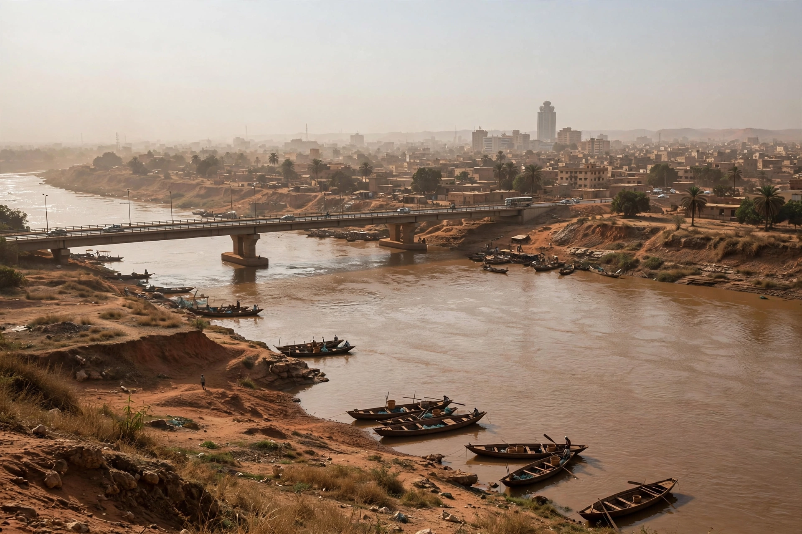

[Image placeholder: The Niger River at Bamako, with the King Fahd Bridge]| Country | Mali |
|---|---|
| River | Niger River |
| Population | About 3 million (metro estimates) |
| Region | Bamako Capital District |
**Bamako** is the capital and largest city of Mali, a port on the Niger River in the southwestern part of the country. Its name derives from Bambara words for 'crocodile river'. Bamako grew from a trading village into the capital of French Sudan and then of independent Mali in 1960, and is one of the fastest-growing cities in Africa.
The city sprawls across both banks of the Niger, joined by bridges including the King Fahd Bridge, with the presidential palace (Koulikoro/Koulouba hill) overlooking it. Bamako is famous for its music scene — the home of artists such as Salif Keïta and Amadou & Mariam — and for its vast, colourful markets and motorcycle taxis.
Bamako was a modest Bambara settlement and market when French forces arrived in the 1880s; it became capital of the colony in 1908 when the Dakar–Niger railway reached it. After independence under Modibo Keïta, the city expanded steadily and then explosively from the 1990s as rural migrants arrived.
Mali's coups (2012, 2020, 2021), jihadist insurgency in the north and centre, and economic strain have shaped recent decades, though Bamako itself has remained comparatively secure. Flooding, waste management and electricity shortages are persistent urban problems.